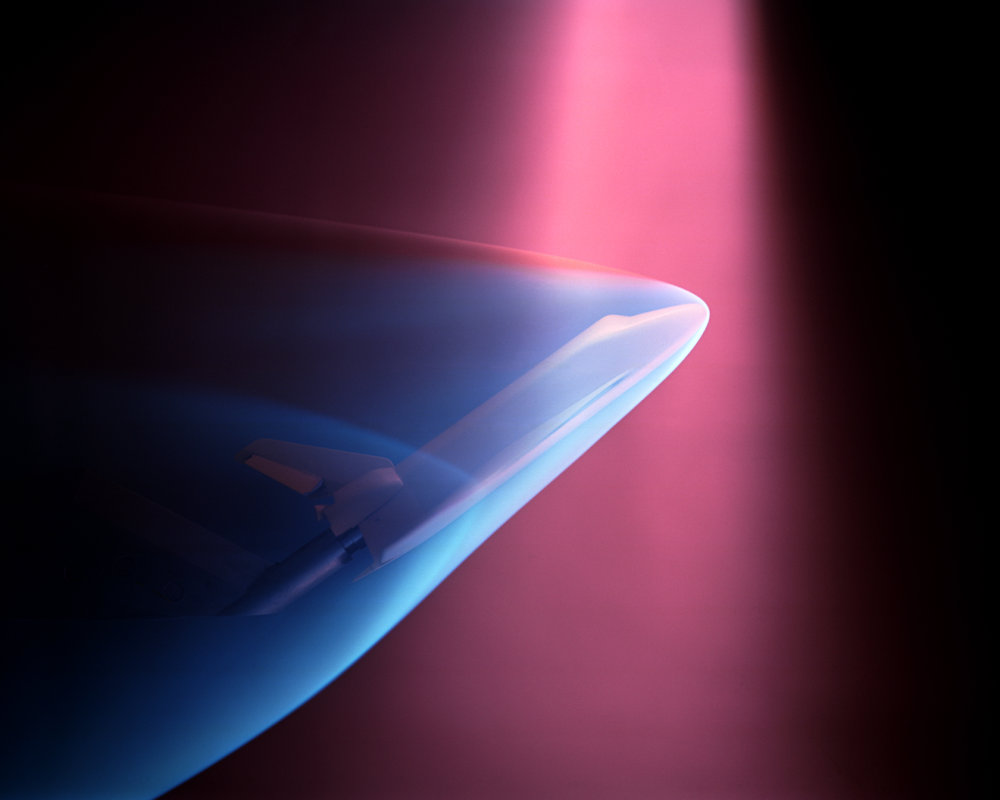
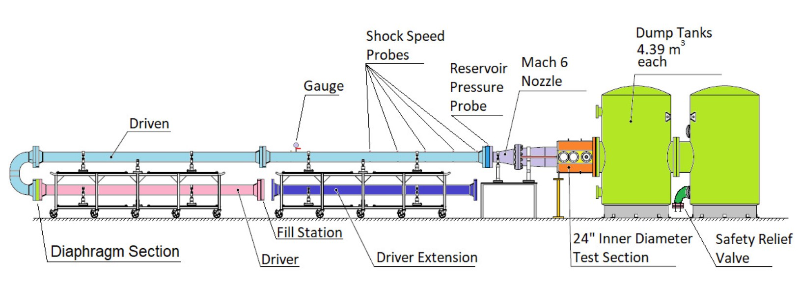

Context & Motivation
Background
Hypersonic flight presents some of the most demanding engineering challenges of our time. Ground-based testing is essential — and the Stevens shock tunnel is being upgraded to meet that challenge.

Background &
motivation
Wind tunnels have been fundamental to aerodynamics research for decades. There are two primary types: indraft tunnels, which operate by creating a vacuum differential to draw air through the test section, and shock-type tunnels, which use a high-pressure rupture to generate a brief but intense flow. Stevens Institute operates a shock-type tunnel.
This project aims to design and fabricate a new nozzle capable of accelerating flow to Mach 14 for use in the Stevens shock tunnel — extending its capability well into the hypersonic regime and enabling research that is currently out of reach at the facility.
At hypersonic speeds, aerothermal loads become extreme and shock interactions grow complex. Experimental validation in controlled facilities is necessary to build confidence in vehicle designs before flight — numerical simulation alone is not sufficient.

Stevens shock tunnel — full facility schematic. Driver, nozzle, test section, and dump tanks.
The Stevens
shock tunnel
A shock tunnel generates high total-enthalpy flow by using a reflected shock wave to rapidly heat and compress a test gas. The resulting high-pressure, high-temperature gas is then expanded through a convergent-divergent nozzle into a test section, producing a brief but well-characterized hypersonic flow field — typically lasting milliseconds.
The Stevens tunnel is a valuable research asset, currently capable of generating flows up to Mach 6 with nitrogen as the working fluid. This project replaces the nozzle section and switches to helium, extending the facility's reach to Mach 14 — more than doubling its hypersonic capability.
Mach 6
Nitrogen working fluid. Existing nozzle geometry. Operational and validated, but limited to the lower end of the hypersonic regime — insufficient for high-speed boundary-layer physics or re-entry research.
Mach 14
Helium working fluid. New 2D planar nozzle designed by MOC and validated by CFD. Fits existing tunnel structure with no structural modifications required.
Nitrogen (N₂)
Liquefies at 77 K. Constrains achievable stagnation temperatures and places an effective ceiling on the Mach numbers accessible without phase-change issues.
Helium (He)
Liquefies at 4.2 K. Allows the tunnel to reach the high stagnation temperatures required for Mach 14 while remaining entirely in the gas phase.
Closing the
research gap
The most flight-relevant hypersonic conditions — high-speed boundary-layer physics, peak aerothermal loading during re-entry, and hypersonic flight — occur in the Mach 8–18 range. At Mach 6, the Stevens tunnel sits just below this window.
A Mach 14 facility directly addresses this gap. It enables research into phenomena that are qualitatively different from those at Mach 6: real-gas effects, dissociation, more intense shock–boundary-layer interactions, and combustion at relevant inlet conditions.
Crucially, helium-based tunnels have a long heritage at facilities like the NASA Ames Mach 20 tunnel and the Langley Helium Tunnel — demonstrating that this approach is well-understood and technically mature. This project applies that heritage to a university-scale facility for the first time at Stevens.
What becomes
possible
Development & Testing of Hypersonic Vehicles
The upgraded tunnel enables aerodynamic testing of reentry vehicles, hypersonic aircraft, and missile vehicles at flight-relevant Mach numbers, providing experimental data to validate computational designs before committing to costly flight tests.
Material & Coating Evaluation
At Mach 14, aerothermal heating is severe. The facility enables direct testing of heat shields and thermal protection systems (TPS) under realistic hypersonic conditions — essential for reentry vehicle and leading-edge material qualification.
Sensor & Instrument Calibration
High-speed pressure transducers, heat flux gauges, and other hypersonic instrumentation must be validated in real flow environments. The upgraded tunnel provides a controlled Mach 14 testbed for sensor development and calibration research.